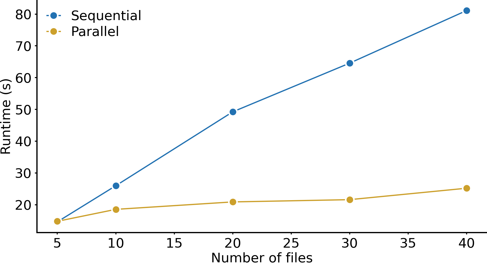

FAQ#
Here are some common questions and answers. If you can’t find what you’re looking for here, please file an issue on our GitHub page.
How can I optimize my memory usage?#
Running out of memory is a common problem when dealing with large images. Here are a couple of things you could consider to make your workflow more memory efficient.
Lazy loading with zarr: if you already have your objects stored in
zarrformat, it is usually more memory-efficient to load them usingxr.open_zarr(file)thanxr.load_dataset(file). This is especially effective when you are subsetting your data, e. g. only looking at 10 channels when plotting a sample.Subsetting: if you already know that you will require only a subset of your data, e. g. looking at certain channels, it is advised to perform subsetting as early as possible. This can be done with
ds.pp[channels].Deleting objects which are not required anymore: spatialproteomics deliberately does not perform in-place operations, but rather copies the existing object to return a new one. This can be heavy on memory, if you do not remove intermediate variables once you do not need them anymore. You could consider removing them with
dellike this:
ds_new = ds.pp.your_workflow()
del ds
Downsampling: when looking at large images, you can downsample the image before plotting using
ds.pp.downsample(rate=8). When zooming into a specific area, you can omit the downsampling again.Garbage collection: this is especially relevant if you perform operations in a for loop. If you try to store the dataset in the same variable, python’s garbage collection might have some troubles freeing up memory due to cyclical references (for more information, please refer to this post). In this case, calling the garbage collector manually can help alleviate some of those issues:
import gc
for ds in [...]:
ds = ds.pp.your_workflow()
gc.collect() # manually calling the garbage collector after each iteration
I have a lot of samples. Can I use parallelization to speed up the analysis?#
Yes, this is exactly what dask is useful for. Their documentation provides a good starting point for this. Since spatialproteomics is built on top of xarray, parallelization with dask is natively supported. If you want to apply the same workflow to a bunch of files, you could do it like this:
from dask import delayed, compute
def process_file(path):
import spatialproteomics as sp
ds = (xr.open_zarr(path)
.pp.add_quantification(func="intensity_mean")
.pp.transform_expression_matrix(method="arcsinh"))
return ds
tasks = [delayed(process_file)(f) for f in files]
results = compute(*tasks, scheduler="processes", num_workers=16)
This can result in substantial speedup compared to sequential execution with for loops, as illustrated below.

When do I apply method directly on the object, and when do use sp.method()?#
Spatialproteomics has two distinct backends: a xarray backend and a spatialdata backend. These follow slightly different philosophies.
The xarray backend is based on a functional programming design. This means that you can use it to call methods directly on your object, allowing you to pipe data from one step to the next. For example, this could look like my_data.pp.segment().la.predict_cell_types().pl.show(). Internally, spatialproteomics takes care of synchronizing shared dimensions across your data.
The spatialdata backend is for when you want to use spatialdata objects from the start. In this case, the syntax is slightly different, but more similar to syntax you might be used to from scverse packages (such as scanpy or squidpy). Here, your code would look like this:
import spatialproteomics as sp
sp.pp.segment(my_data)
sp.pp.predict_cell_types(my_data)
These operations modify your object in-place, unless you set copy=True in the method signature.